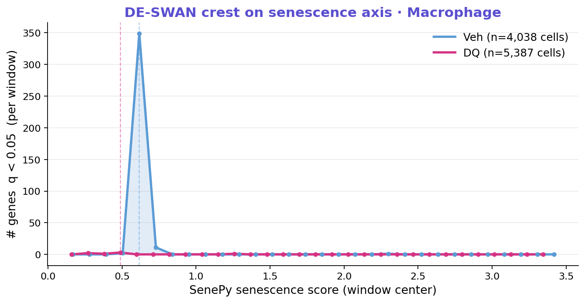
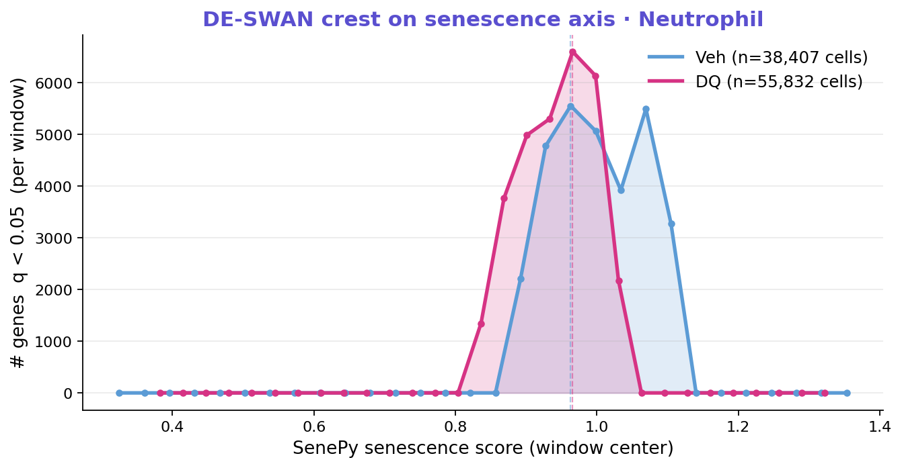
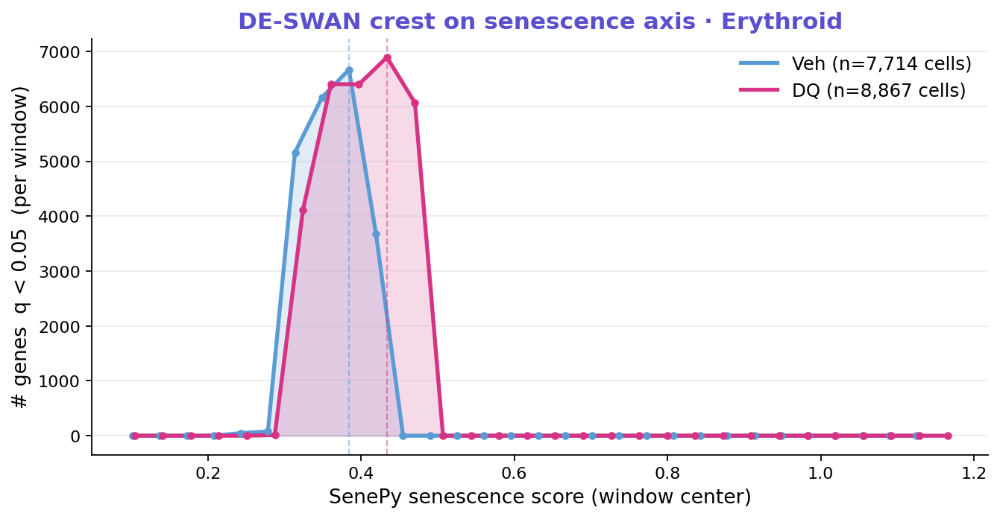
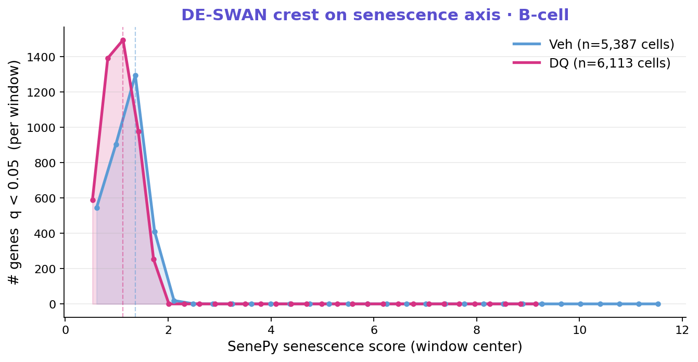
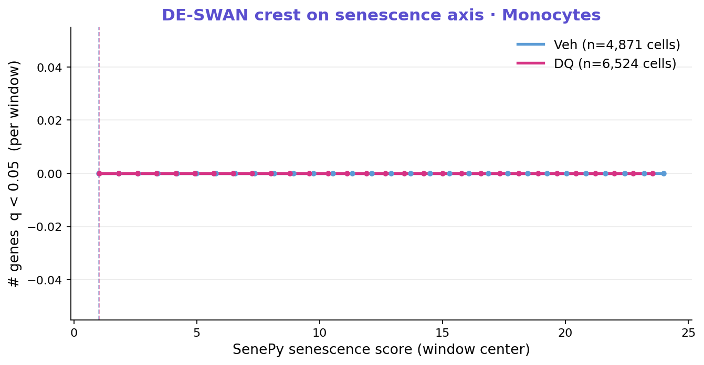
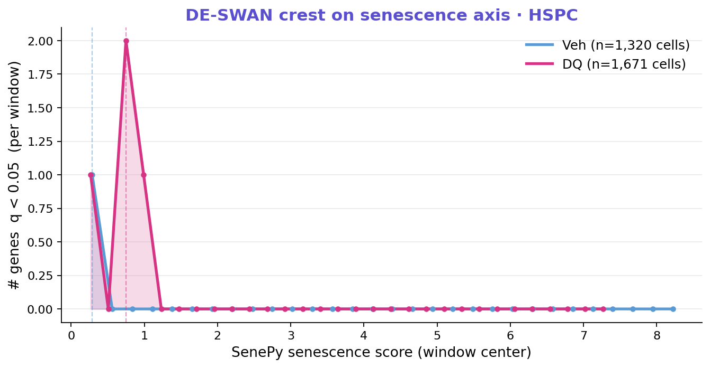
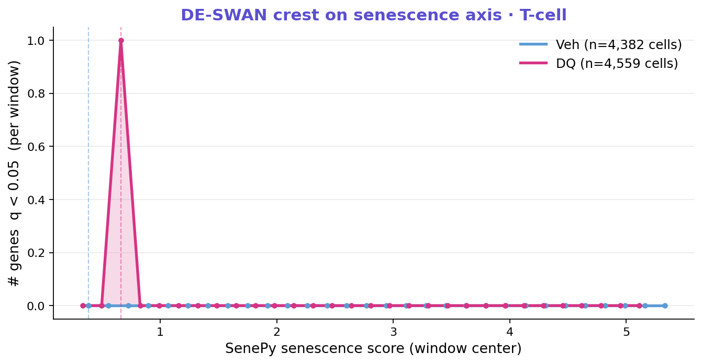
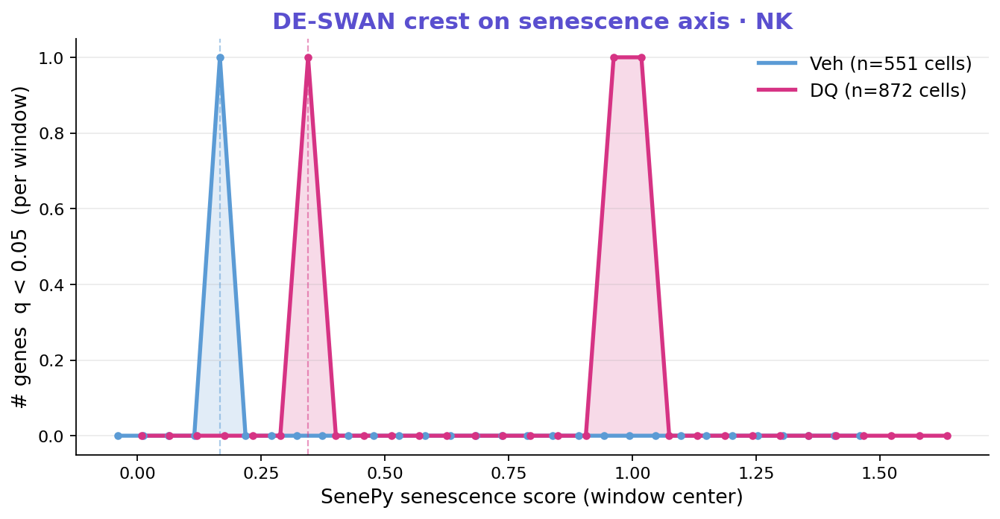
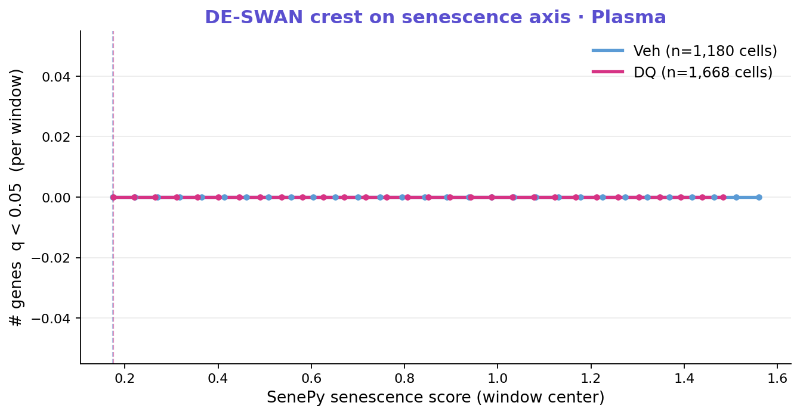
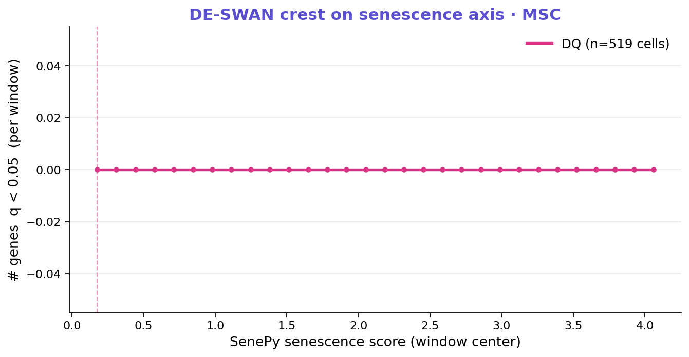

Macrophage에서 시나리오 A 적중 — DQ가 senescence-axis crest를 거의 완전히 무너뜨림 (Veh 349 sig genes → DQ 3 sig genes, **99% 감소**). 다른 cell type에서는 crest가 평탄하거나 두 condition에서 유사. Macrophage가 본 G11BM 논문의 새 mechanistic figure 후보 1순위.
| Cell type | Veh peak score | Veh #sig | DQ peak score | DQ #sig | 해석 |
|---|---|---|---|---|---|
| ⭐ Macrophage | 0.617 | 349 | 0.489 | 3 | DQ가 crest 해체 (시나리오 A) |
| Neutrophil | 0.963 | 5,549 | 0.966 | 6,595 | 두 조건 모두 sharp crest, 위치 동일 |
| Erythroid | 0.384 | 6,671 | 0.434 | 6,896 | 두 조건 모두 매우 sharp, 위치 ≈동일 |
| B-cell | 1.361 | 1,296 | 1.123 | 1,495 | DQ가 crest를 왼쪽으로 이동 (시나리오 B) |
| Monocytes | 1.024 | 0 | 1.041 | 0 | crest 없음 (시나리오 D) |
| HSPC | 0.288 | 1 | 0.749 | 2 | crest 없음 (sample size 적음) |
| T-cell | 0.385 | 0 | 0.663 | 1 | crest 없음 |
| NK | 0.167 | 1 | 0.345 | 1 | crest 없음 (cells <1k) |
| Plasma | 0.174 | 0 | 0.175 | 0 | crest 없음 |
| MSC | — | — | 0.175 | 0 | Veh n<500 자동 skip |
본 분석의 핵심 발견. Veh에서는 senescence score ≈0.62 부근에 명확한 봉우리(349개 유전자가 동시에 transition)가 있는데, DQ에서는 이 봉우리가 거의 완전히 사라짐 (3개 유전자뿐). 이는 senolytic이 macrophage의 senescence commitment 자체를 disrupt함을 시사.

Cdc5l, Tpx2, Mbd5, Mta1, Insr, Glud1, Atp11b, Ep400, Grb2, Ndufa9, Cyb561a3, Fcna, Dgkz
이 두 cell type은 crest 자체는 매우 strong하지만 (수천 유전자 동시 transition), Veh와 DQ 사이 차이가 거의 없음. Senescence threshold는 존재하나 DQ가 못 건드림. Senescence axis 자체의 존재 증거로 supplementary figure 후보.

Rps27l, Insig1, Stat3, Irf2bp2, Hoxb4 — translation/inflammation 시그널. DQ가 이 transition은 못 건드림.

Veh @1.36 → DQ @1.12로 leftward shift. DQ가 senescence threshold를 더 낮은 score 쪽으로 끌어당김. 의미는 미묘 — DQ가 B-cell senescence를 가속하는 게 아니라, distribution 형태가 변형됐을 가능성. truncation 효과 (DQ가 high-score cell을 제거) 의심됨.

senescent_fraction_per_sample.csv로 truncation effect 보정 후 재해석 권장.
이 cell type들에선 SenePy score 축에 따라 광범위 transition이 일어나는 시점이 없음. 가능성: (a) 이미 SenMayo + Spearman>0.7 filter로 score-driven gene 다 빠진 뒤라 잔여 시그널 없음, (b) 진짜 senescence가 점진적이라 threshold 부재, (c) cell number 부족 (NK, MSC, Plasma 특히). HSPC는 흥미롭게 negative — senescence 점진적 모델 지지.






per_gene_peaks_Macrophage_Veh.csv를 본인 gsea_percelltype_aging.py 패턴으로 KEGG/Reactome 돌리기. Cell cycle + metabolism + chromatin이 강하게 나오면 mechanistic story 완성.code_for_G11BM/output_final/figures/senescence_deswan/
├── crest_Macrophage.{png,pdf} ← ⭐ headline
├── crest_Neutrophil.{png,pdf}
├── crest_Erythroid.{png,pdf}
├── crest_B-cell.{png,pdf}
├── crest_<6 others>.{png,pdf}
└── summary_grid.pdf ← 한 페이지 모든 cell type
code_for_G11BM/output_final/tables/senescence_deswan/
├── crest_summary.csv ← 위 표의 raw 데이터
├── deswan__.csv (×18)
└── per_gene_peaks__.csv (×18)
code_for_G11BM/manuscript/
└── interpretation_of_senescence_deswan.md ← 한국어 10-section 해설